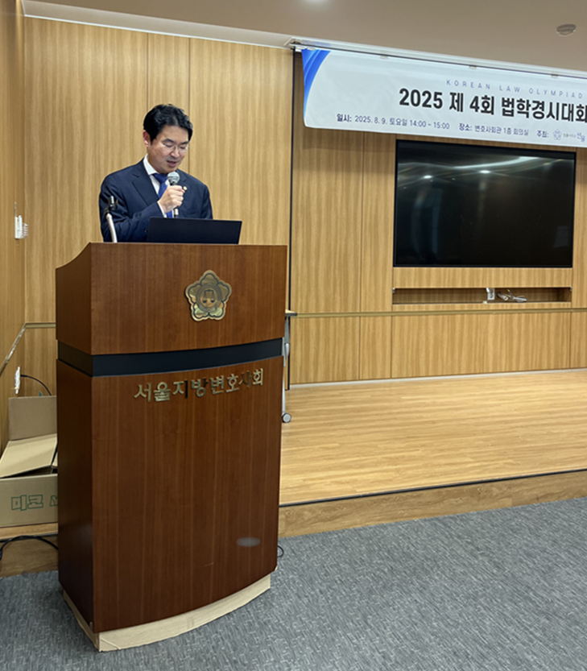

수상자 모두 훌륭한 법조인이 될 것입니다.
김영훈
변호사공제재단 이사장
제52대 대한변협 협회장 · 법학경시대회 최초 기획자
변협 협회장·부협회장, 변호사공제재단 이사장, 학계와 로펌, 리걸테크 기업, 금융권 인사까지 본 대회를 응원하고 있습니다.
본 대회는 단순한 시험이 아닙니다. 응시자가 법전·판례·교과서를 직접 탐독하며 자기주도 학습을 실천하고, 그 결과를 객관적으로 검증받고, 그 다음 단계까지 이어지도록 설계한 학생 성장 플랫폼입니다.
기존 제도에서 소외되었던 학생들에게도 도전과 성장의 기회를 제공하고, 기초법학 부흥과 학부 법학 정상화에 디딤돌이 되고자 합니다.
본 대회는 2023년 대한변호사협회가 추진하다 보류된 사업의 직접적 연속선상에 있습니다. 당시 변협을 이끌었던 제52대 김영훈 협회장은 현재 변호사공제재단 이사장으로서 본 대회를 후원하고 있으며, 시상식마다 직접 메시지를 보내옵니다.
현 김정욱 협회장과 김승현 부협회장 또한 회차마다 축하 메시지를 전합니다. 본 대회가 법조계의 공식적 지지 속에 운영되고 있음을 보여줍니다.

수상자 모두 훌륭한 법조인이 될 것입니다.
수상자 여러분 고생하셨습니다. 다들 뛰어난 법조인이 되길 기대합니다.
수상자 여러분 축하드립니다. 우수한 역량을 갖추어 원하는 바 모두 이루실 것으로 믿습니다.
오늘 수상은 AI 시대 준비된 법조인이 되기 위한 첫발이라고 생각합니다. 영광스러운 수상의 의미를 가슴에 새기고 용맹정진하여 창발적 인재로 거듭나시길 바랍니다.
법률구조재단, KAIST, 고려대, 동국대·고려사이버대 등 학계와 자문위원들이 강의·저서·축사로 응원해 왔습니다.
공익적 사명을 다하고 헌법정신을 실현하는 법조인이 되시길 기원합니다.
수상자 모두 훌륭한 법조인이 될 것으로 믿어 의심치 않습니다.
자신이 처한 현실에 안주하지 않고, 더 나은 미래를 위해서 노력하는 분들이 많은 것 같습니다. 송곳은 어떤 주머니에 집어넣어도 뚫고 나온다는 속담이 생각나는군요. 아름다운 열매를 맺기를 기원하겠습니다.
구체적 축사 문구는 별도 공개되지 않았으나, 제2회 대상 김예진 학생에게 본인의 저서 「헌법강의」를 증정하여 헌법 공부를 이어갈 수 있도록 직접적인 학습 지원을 제공하였습니다.
로펌·리걸테크·금융권 인사들이 AI 시대 법률 인재상과 진로의 확장을 응원해 왔습니다.

AI 감독 시스템과 오픈북 방식은 법학 교육의 새로운 방향을 제시했습니다. 법학적 사고력과 사회적 책임감을 갖춘 인재를 발굴하고 격려하는 축제로서, 수상자 여러분의 앞날에 무한한 가능성과 성취가 함께하길 기원합니다. 여러분의 열정과 노력은 법학의 미래를 밝히는 등불이 될 것입니다.
반갑습니다. 수상자 여러분, 그리고 오늘 이 자리를 빛내주신 모든 참석자 여러분께 진심으로 감사의 인사를 드립니다. 이렇게 훌륭한 법학경시대회를 주관하신 법률사무소 선율의 김민규 대표변호사님께도 경의를 표합니다.
오늘 우리는 단순한 시상식을 넘어, 법학의 미래를 함께 그려나가는 뜻깊은 자리에 모였습니다. 제4회 법학경시대회는 단순한 경쟁을 넘어, 법학적 사고력과 사회적 책임감을 갖춘 인재를 발굴하고 격려하는 축제였다고 생각합니다. 특히, 인공지능 시대에 걸맞은 AI 감독 시스템과 오픈북 방식이라는 혁신적 운영은 법학 교육의 새로운 방향을 제시했다고도 생각합니다.
이번 대회에서 대상을 수상한 박상영 님을 비롯하여, 각 부문에서 뛰어난 성과를 거둔 모든 수상자 여러분께도 아낌없는 박수를 보냅니다. 저도 살아가며 몇 번의 기회에서 선배 법학자 또는 법조인으로부터 법학을 성실히 공부하여, 사회에 반드시 필요한 사람이 되고, 바르고, 용기있고, 따뜻한 법률가가 되라는 가르침을 받은 것 같고, 그러한 가르침을 잊지 않고 살아가려 노력하지만, 많이 부족함을 느낍니다.
이번 대회를 통하여 여러분들이 법전과 판례를 직접 검색하며 문제를 분석하고, 법리를 구성해 나가는 모습은 법학이 단지 밥벌이를 하는 지극히 실용적이기만 한 '밥학'이나 '암기의 학문'이 아니라, '사회를 설득하고 정의를 구현하는 도구'임을 다시금 알 수 있었을 것입니다.
항상 원칙만을 앞세워 기계적으로 법을 적용하기보다, 소외된 약자의 이야기에 귀를 기울이고 아픔을 함께 하며 실질적 정의를 구현할 수 있는 법조인이 되기 위한 거시적인 교육 과정의 하나로 법학경시대회가 자리매김 되었으면 좋겠습니다.
미국 대법관 올리버 웬델 홈즈 주니어(1841–1935)가 이야기한 "The life of the law has not been logic; it has been experience."(법의 생명은 논리의 결과물이 아니라, 경험에서 나온다)라는 말은 곰곰이 생각해 볼 만한 문구입니다. 법이 단순한 이론이나 조문을 넘어, 인간의 삶과 사회의 맥락 속에서 살아 숨 쉬는 존재이기 때문에, 여러분들이 법전을 넘기고 판례를 분석하며 고민했던 그 모든 순간은, 단순한 시험 준비가 아니라 법의 생명을 체험한 시간이었다고 말씀드릴 수 있습니다.
마지막으로 말씀드릴 것은, 법학은 시대의 변화에 따라 끊임없이 앞으로 진화해야만 하는 학문이라는 점입니다. 시사적인 문제와 AI 시대의 학습 방식이 반영된 것은, 법학이 현실과 동떨어진 이론이 아니라, 사회를 이해하고 변화시키는 살아있는 지식임을 보여주는 증거입니다. 특히, KAIST 인공지능·리걸테크 연구실과 수상자들이 함께 진행 중인 것으로 알고 있는 'AI 기반 법학 학습 경로 추천 장치 및 방법'에 관한 발명은 법학과 기술의 융합이라는 새로운 지평을 여는 시도이며, 앞으로 법조계의 혁신을 이끌 중요한 발걸음이 될 것입니다.
끝으로, 오늘 이 자리에 함께한 모든 분들께 다시 한번 감사드리며, 수상자 여러분의 앞날에 무한한 가능성과 성취가 함께하길 기원합니다. 여러분의 열정과 노력은 법학의 미래를 밝히는 등불이 될 것입니다. 앞으로도 정의와 공공의 이익을 향한 여러분의 여정에 늘 응원의 마음을 보냅니다. 감사합니다.
법률가는 AI를 선도하고 설계하는 주역으로 자리 잡아야 할 시점입니다. 수상자들이 법률과 AI를 연결하는 핵심 인재로 성장하기를 기대합니다.
제5회 법학경시대회에서 수상하신 모든 분들께 진심으로 축하의 말씀을 드립니다. 이번 대회는 그동안 갈고닦은 여러분의 노력과 열정이 빛을 발하는 뜻깊은 자리였다고 생각합니다.
법학은 인공지능, 특히 대규모 언어모델 기반 AI가 가장 효과적으로 적용될 수 있는 분야 중 하나로 손꼽힙니다. 이는 법률 전문가들이 AI 시대에는 더욱 주도적인 역할을 담당하게 된다는 것을 의미합니다. 이제 법률가는 AI의 수요자가 아닌, AI를 선도하고 설계하는 주역으로 자리 잡아야 할 시점입니다.
이러한 변화의 흐름 속에서 교육의 중요성은 더욱 커지고 있으며, 엘박스 또한 법률 AI 교육과 연구에 깊은 관심을 가지고 관련 활동을 확대해 나가고 있습니다. 이번 대회에서 우수한 성과를 거두신 모든 분들이 앞으로 법률과 AI를 연결하는 핵심 인재로 성장하시기를 기대합니다.
다시 한 번 수상을 축하드리며, 여러분의 밝은 미래를 응원합니다.
법학경시대회에서 우수한 성적을 획득한 여러분들은 법학적 사고에 있어 탁월한 능력자임을 입증하였으니 더욱 정진하셔서 훌륭한 법조인으로서 성장하실 것을 믿습니다.
법학경시대회의 경험과 성과는 법조계뿐 아니라 금융권 입사에도 도움이 될 것으로 생각합니다.
시상식에 그치지 않고, 로스쿨 면접관 출신 법조인, 법조 선배, 로스쿨 재학생·과거 수상자가 후속 프로그램을 통해 실질적 멘토링을 제공합니다.
대회를 마치고 수상자들이 남긴 후기와 수상소감입니다. 개인 정보 보호를 위해 모든 후기는 익명으로 게재되었으며, 회차·소속·이름 등 식별 정보는 제거되었습니다.
공학적 사고와 법학적 접근을 융합하려 노력한 것이 좋은 결과로 이어졌다. 앞으로 리걸테크 분야 연구를 더 해보고 싶다.
아직 부족한 부분이 많다고 느끼지만 수상에 감사하다. 기초를 탄탄히 다진 것이 좋은 결과로 이어진 것 같고, 이를 발판으로 훌륭한 법조인이 되겠다.
LEET 배경지식과 법전원 진학에 필요한 기초법학을 부담 없이 점검할 수 있어 인상 깊었다. 체계적인 형법 학습이 고득점에 도움이 됐다.
수상을 통해 얻은 자신감과 성찰이 앞으로의 수험과 진로에도 중요한 이정표가 될 것이다.
대법원 판례속보 메일링과 법학 전문지를 꾸준히 접한 것이 법적 사고력과 문제해결 능력을 키우는 데 도움이 됐다.
실무에서 형사법뿐 아니라 민사·헌법 지식도 필요하다고 느꼈다. 사건과 관련해 그때그때 책을 찾아보던 습관이 대회에 크게 도움이 됐다.
재도전 끝에 거둔 성과는 한계를 넘어서는 값진 결실이었다. 문제를 깊게 분석하고 법리를 구조화하는 과정에서 법학적 사고력이 단단해졌다. 법학을 단순히 정답을 맞히는 학문이 아니라, 사회문제를 설득력 있게 해석하고 정당성을 구성하는 작업으로 체감했다.
형사법 교재로 자신감을 갖게 되었고, 로스쿨에 진학해 검사가 되는 것이 꿈이다.
판례 암기보다 법리 이해를 목적으로 공부했고, 모르는 부분은 판례 전문을 찾아 알 때까지 읽었다. 헌법학과 형법총론 기본서가 기본 뼈대를 채우는 데 도움이 됐다.
대회를 통해 앞으로의 공부 방향에 필요한 통찰을 얻었다. 최신 판례를 단권화하고 시의성 있는 주제를 접하면서, 법과 현실이 분리되지 않았음을 느꼈다.
법학경시대회를 통해 법학적 사고가 한층 두터워졌고, 앞으로의 공부 방향에 큰 자신감을 얻었다.
대회 준비가 행정사 2차 논술형 답안 작성 실력 향상과 법무사 1차 시험 준비에 도움이 됐다.
조문·이론·판례·학설을 꼼꼼히 학습한 것이 수상의 비결이었다.
판례를 읽고 법리가 실제 상황에서 어떻게 적용되는지 깊이 고민한 경험이 도움이 됐다. 법학이 실생활에 적용되는 방식을 공부하며 법조인의 꿈이 더 분명해졌다.
판례 사실관계에 조문을 적용해 결론을 도출하는 방식으로 반복 학습한 것이 주효했다. 대회 준비 과정에서 판례와 이론을 깊이 탐구하며 사고의 폭을 넓혔고, 직전 수상을 계기로 법학 저술 활동에도 참여하면서 학문적 시야가 넓어졌다.
단권화된 교재로 조문과 중요 판례를 균형 있게 다독하려고 노력했다.
법학전문대학원협의회 홈페이지에 게시된 표준판례를 정독한 것이 도움이 됐다.
법학에 대한 애정이 더욱 커졌고, 앞으로 자기주도적 법학공부와 로스쿨 진학에 매진하겠다.
전공에 대한 자신감이 흔들리던 중 실력을 객관적으로 판단해 보려고 도전했는데, 예상치 못한 수상으로 큰 자신감을 얻었다. "안 하는 것보다 일단 해보는 것이 낫다"는 교훈을 얻었다.
예상치 못한 수상에 감사하며 과분한 영광이다.
학부 과정에서 쌓아온 기초 법학 지식과 헌법·민법·형법의 기본 이해를 확인받은 수상이었다. 앞으로 공공안전법학 석사 과정에 진학해 치안 현장과 법학 이론을 잇는 역할을 하고 싶다.
로스쿨 입시를 준비하겠다고 마음먹은 첫 단계에서 좋은 결과를 얻어 뿌듯하다. 좋은 영향력을 나누는 법조인으로 성장하겠다.
비전공자로 출발해 판례가 가장 어려웠는데 판례 부문 성과가 나와 기뻤다. 1차 시험 준비 과정에서 실체법의 미흡한 부분을 점검하고 판례를 다시 회독하는 뜻깊은 시간이었다.
온라인 오픈북 방식의 법학 객관식이 무엇인지 알게 됐고, 수상과 도서 출판 작업을 통해 팀워크를 배웠다. 사례형 연습 끝에 ISBN 발급 도서까지 만들었고, 대학원 진학도 그 연습의 성과라고 본다. 매 회차 시험을 통해 헌법·민법·형법 자료를 두루 살피며 기본 실력을 점검할 수 있었다.
대회 수상과 공저 출판 경험이 대학원 지원서에서 법학에 대한 진지한 관심과 학습 역량을 보여주는 증거로 작용했다.
본 대회는 출범 이후 시행을 거듭하며 변협 집행부, 공익 재단, 학계, 로펌, 리걸테크 기업, 금융권에 이르기까지 법조 생태계 전반의 인사들의 응원을 받아 왔습니다. "좋은 법조인이 되라"는 장래 격려를 넘어, AI 시대 법률 인재로 성장하고 공익과 헌법정신을 실현하며 실제 학습·저술·연구·입시·진로 기회로 이어지도록 돕는 응원입니다.